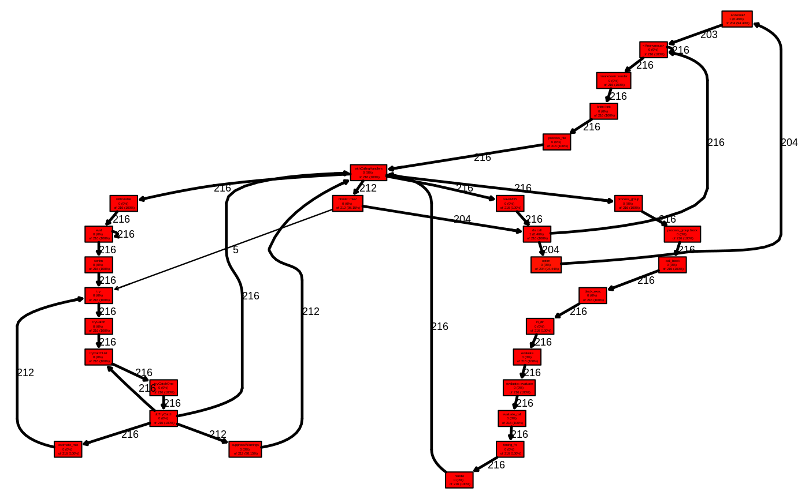

library(senlm)
library(proftools)
library(Rgraphviz)
#> Loading required package: graph
#> Loading required package: BiocGenerics
#> Loading required package: parallel
#>
#> Attaching package: 'BiocGenerics'
#> The following objects are masked from 'package:parallel':
#>
#> clusterApply, clusterApplyLB, clusterCall, clusterEvalQ,
#> clusterExport, clusterMap, parApply, parCapply, parLapply,
#> parLapplyLB, parRapply, parSapply, parSapplyLB
#> The following objects are masked from 'package:stats':
#>
#> IQR, mad, sd, var, xtabs
#> The following objects are masked from 'package:base':
#>
#> anyDuplicated, append, as.data.frame, basename, cbind,
#> colnames, dirname, do.call, duplicated, eval, evalq, Filter,
#> Find, get, grep, grepl, intersect, is.unsorted, lapply, Map,
#> mapply, match, mget, order, paste, pmax, pmax.int, pmin,
#> pmin.int, Position, rank, rbind, Reduce, rownames, sapply,
#> setdiff, sort, table, tapply, union, unique, unsplit, which,
#> which.max, which.min
#> Loading required package: grid
## --- Fit a model whilst recording profiling information --- #
Rprof(tmp <- tempfile(), line.profiling = TRUE)
fitted_model <- senlm (data=haul, xvar="x_depth", yvar="y_Sebastolobus.altivelis",
mean_fun="gaussian", err_dist="zip")
Rprof(NULL)
## --- Convert the profiling information into proftools format --- #
pd <- readProfileData(tmp)
## --- Plot Profiling Data --- #
plotProfileCallGraph(pd)
##calleeTreeMap(pd)
##flameGraph(pd)
## --- Summarise the Profiling Data --- #
pathSummary(pd)
#> total.pct
#> ... fn -> do.call -> minuslogl -> NLL.discrete 26.75
#> ... check_par_valid -> make_bounded 7.00
#> ... optim -> .External2 -> <Anonymous> -> fn 5.35
#> ... minuslogl -> NLL.discrete -> make_bounded 5.35
#> ... minuslogl -> NLL.discrete -> check_par_valid 4.94
#> ... relist2 -> sapply -> simplify2array -> unique 4.12
#> ... NLL.discrete -> NLL.negbin -> lfactorial 3.70
#> ... NLL.discrete -> do.call -> mu_gaussian 3.70
#> ... minuslogl -> NLL.discrete -> NLL.negbin 3.70
#> ... relist2 -> sapply -> simplify2array -> unlist 2.88
#> ... <Anonymous> -> fn -> relist2 -> as.list 2.88
#> ... do.call -> mu_gaussian -> as.list 2.06
#> ... <Anonymous> -> fn -> namedrop -> seq 2.06
#> ... minuslogl -> NLL.discrete -> do.call -> paste 1.65
#> ... fn -> relist2 -> sapply -> isFALSE 1.65
#> ... do.call -> minuslogl -> NLL.discrete -> sum 1.65
#> ... fn -> relist2 -> sapply -> simplify2array 1.23
#> ... fn -> do.call -> namedrop -> seq 1.23
#> ... .External2 -> <Anonymous> -> fn -> order 1.23
#> ... .External2 -> <Anonymous> -> fn -> namedrop 1.23
#> ... unique -> unique.default -> is.factor 0.82
#> ... minuslogl -> NLL.discrete -> do.call 0.82
#> ... fn -> relist2 -> sapply -> lapply 0.82
#> ... fn -> relist2 -> as.list -> as.list.default 0.82
#> ... fn -> namedrop -> seq -> seq.default 0.82
#> ... do.call -> minuslogl -> NLL.discrete -> $ 0.82
#> ... bbmle::mle2 -> do.call -> optim -> .External2 0.82
#> ... <Anonymous> -> lazyLoadDBfetch 0.82
#> ... <Anonymous> -> fn -> relist2 -> sapply 0.82
#> ... .External2 -> <Anonymous> -> fn -> relist2 0.82
#> ... sealNamespace -> lockEnvironment 0.41
#> ... NLL.discrete -> NLL.negbin -> sum 0.41
#> ... NLL.discrete -> check_par_valid -> $ 0.41
#> ... namedrop -> unique -> unique.default 0.41
#> ... mu_gaussian -> as.list -> as.list.default 0.41
#> ... loadNamespace -> dynGet -> get0 0.41
#> ... genD -> genD.default -> func -> namedrop 0.41
#> ... func -> do.call -> minuslogl -> NLL.discrete 0.41
#> ... fn -> relist2 -> sapply -> match.fun 0.41
#> ... fn -> relist2 -> sapply -> lapply -> FUN 0.41
#> ... fn -> do.call -> namedrop -> unique 0.41
#> ... attr.all.equal -> order -> vapply 0.41
#> ... <Anonymous> -> fn -> order -> is.numeric 0.41
#> ... <Anonymous> -> fn -> order -> as.logical 0.41
#> ... <Anonymous> -> fn -> do.call -> namedrop 0.41
#> ... <Anonymous> -> fn -> do.call -> minuslogl 0.41
#> ... .External2 -> <Anonymous> -> fn -> unlist 0.41
#> ... .External2 -> <Anonymous> -> fn -> names<- 0.41
##funSummary(pd)
##callSummary(pd)
##hotPaths(pd)
##flatProfile(pd)
## --- Annotate Sourcecode with Profiling Data -- #
# annotateSource is very useful, but won't work within a vignette.
#annotateSource(pd, show = TRUE)
##srcSummary(pd)